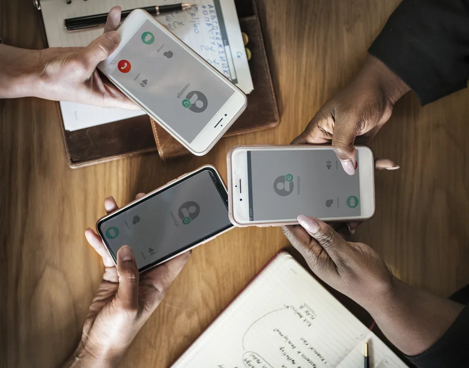
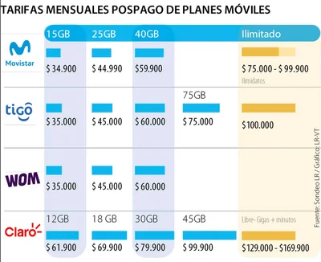

Hi, I’m Nicolás, and just like you, I’ve been learning step-by-step how to improve my connectivity.
I’m no expert, but through searching on Internet →, tutorials, and above all, trial and error, I’ve learned a ton and set up functional solutions.
What does it mean to buy a cell phone plan that’s right for you?
Below, you’ll find a series of information, criteria, and tips that aim to be as clear as possible, so you can feel supported in making the decision about which Smartphone → plan to buy.
The estimated reading time is about 9 minutes and consists of 10 items, but don’t be scared; you can read these items with the help of others. Remember that at SOLE Voltaje, we want to promote the collective use of the internet.
What is this for?
In this solution, you’ll find a few practical tips to help you make a much more informed decision about which cell phone plans are best suited for you.
Before we start, some ethical considerations
At SOLE Voltaje, we like to clarify the ethical implications of the decisions we make, and we like to focus on the circumstances that lead you to make that decision. We often use uncomfortable questions to challenge ourselves.
Shall we play? You want to buy a cell phone plan with data, but do you really need it? Think about it; it might not be the best option for you.
Sometimes, you have free internet available at public libraries. Maybe you can use the WiFi Signal → from one of your neighbors, or you can buy a cell phone PIN to access the internet for a few hours.
If, after scanning your options, you definitely decide that you need to buy a cell phone plan, this is the right place for you! Here, we advise you on which prepaid and postpaid internet plans might be useful.
What do you need?
- Money saved for the purchase
- Information on available operators
- A place where you can top up or subscribe to the plan
- Curiosity
How to do it?

ALERT! Before starting: prepaid or postpaid?
To have clarity when reading this solution, we must first address some concepts. In this case, the difference between a postpaid and a prepaid plan.
| Prepaid | Postpaid |
|---|---|
| It’s when the user pays for mobile services before using them. | It’s when the user pays for mobile services after using them. |
| You can top up whenever you want. | You will have to pay your bill month by month. |
| You can acquire your prepaid plan by subscription or on-demand. | It helps build your credit history. |
| You don’t receive any monthly bill. | It grants you additional benefits like cheaper rates. |
There is no absolute answer as to which type of service to choose. It depends on each person’s habits, possibilities, and needs.
Step 0 → How do I know if I need to buy a cell phone plan?
One of the characteristics of our current era is the great development of international and national markets. Our cell phones are made in China and we can buy them in Colombia; we can go to the market and buy rice brought from Brazil. Furthermore, we find disproportionate consumption options: we can buy white rice, yellow rice, bulk rice, lemon-flavored rice, etc.
There is an endless array of options to turn us into consumers of products that, many times, we don’t need. Thus, we end up buying non-nutritious food and falling into expenses that don’t satisfy the main function of eating.
Similarly, we fill our homes with endless merchandise that ends up piled up or discarded because, in the end, it was useless to us.
At SOLE Colombia, we want to promote responsible consumption.
Is choosing your data plan a responsible choice? We encourage you to answer the following questions:
- Do you need to buy a cell phone plan, or do you have other options to access the internet?
- Is there any other option that could cover your internet connection and be paid for by several people?
- If you buy a cell phone plan, will it really improve your quality of life, or will it make it worse? How much time will you spend on social media? Will it be difficult for you to disconnect from the content? Will it imply a monthly dose of stress knowing how you will pay for this new expense?
- Finally, is this new consumption really a priority for you? What real use will you give it?
- Don’t forget this consideration: the decision you make can be reversible when conditions change. It’s not a child; it’s just a payment plan that you can change whenever and however you need.
Step 1 → What do I need a cell phone plan for?
Now that you’ve decided, it’s time to understand what you’re going to need it for.
Do you need the plan to facilitate your work, to study, to stay connected with your family and friends, or to spend leisure time? Depending on your answer, you will identify usage patterns.
Let’s use my case as an example:
💡 In 2022, I had two jobs and no office. Plus, I moved around a lot: I traveled through Bogotá and to different parts of the country on a recurring basis. I needed to connect to virtual meetings; one of my jobs required Zoom video calls. So, I needed a data connection and to make calls to many people. At that time, I decided to have a postpaid plan with 10 GB and unlimited minutes.
Shortly after, I started traveling and staying constantly at a family farm, where the data signal was very poor. I decided to buy a fixed internet plan for the farm.
In 2023, I only had one job and had an office with internet. I didn’t need to travel as much anymore. I changed my postpaid plan to a cheaper one and canceled the internet plan at the farm.
Now it’s your turn to identify what you need the internet plan for!
Step 2 → According to what you need, these are the questions to ask yourself.
- Do you need minutes, data, or both?
- Do you need a high connection speed to download heavy files or have video calls?
- Do you need this service constantly, or is it only for a few days of the week?
- Do you need coverage in several territories or just one?
- What budget do you have available for this expense?
Step 3 → According to what is available, these are the questions to ask yourself
Now let’s take action! We need to get the following information:
Which mobile operators are available in my territory?
- Ask your neighbors: what operator do they use or have they used in the past? Which one works best? Which one has better technical support? Which one has better rates?
- You can go to the cell phone stores in the nearest urban center and ask directly about which operators they have available. In Colombia, for 2024, there are multiple options: Claro, Movistar, TIGO, WOM, Virgin Mobile, Avantel, and Móvil Éxito are the main operators in the market. The latter two are small operators that rent the infrastructure of the large operators to provide their services.
What plans do these operators have available?
After being clear about the operators available in your territory and knowing which ones perform best, proceed to ask about the prepaid and postpaid plans they offer. Below, we present some comparative tables of the prepaid and postpaid plans that were offered in 2023.
Prepaid plan rates 7-10 days

Selectra, What is the best prepaid cell phone plan in Colombia?Step 4 → Evaluate which is the best option: What do I really need?**
It’s time to make a decision! With the information you gathered, we will give you some criteria that we consider fundamental when making a decision:
- Frequency of use: how much are you going to use it?
 Photo: Pixabay License
Photo: Pixabay License
If, for example, most of your days you need to make calls and be connected to the internet, balancing it out, postpaid plans end up being the best option.
But if, on the other hand, your demand is occasional, has variability throughout the month, and/or you can be constantly connected to a WiFi network at your workplace or home, making sporadic prepaid top-ups might be the most useful.
- Budget: how much money do you want to spend?
Now it’s time to define a budget! An easy calculation: how many hours of work per week does this new consumption represent? This can become a permanent expense, so it is important to reason through the purchase.
The final decision may fall on this point: people who use prepaid plans usually don’t have a constant flow of money that ensures they can pay a monthly fee. While the use of postpaid is associated with people who can guarantee the payment of a monthly fee constantly.
Currently, prepaid top-ups in the Colombian market start from $2,000 COP with one day of validity. On the other hand, the cheapest postpaid plans are around $27,000 COP per month.
To make this decision, take a count of how much you are willing to invest in this service and what your frequency of use is.
- Usage habits: what and how are you going to use it for?
Are you a person who makes long-duration calls, or do you spend more time connected to the internet? Depending on this, you will be able to prioritize the number of minutes, the number of Gigabytes, or both, when choosing your consumption option.
Below, we explain each of these variables if you are still not very clear about how they work:
| Minutes | Data |
|---|---|
| The minutes associated with your plan determine how long you can spend talking to other mobile phones nationwide; in some cases, a number of minutes to other countries like Venezuela, Canada, or the United States is also included. Currently, most postpaid plans come with unlimited minutes. | They are the amount of mobile data intended for internet use on your phone. Their use is the amount your cell phone uploads or downloads when using them. You can configure them to not spend them, save them, or restrict what they are used for. Remember that depending on the content you upload or download, the data consumption will be higher or lower; for example, watching a two-hour movie from your cell phone can consume approximately 300 MB, almost a third of a Gigabyte. Content like videos, audio, or high-resolution images has high data consumption compared to other types of files like text. |
 Photo: CC0 Public Domain,
Photo: CC0 Public Domain,
For example, when we do SOLE, we need to connect a few computers to be able to research Big Questions. That means that the plan we contract must necessarily have data.
You can make your phone’s internet connection available to the group so that everyone can use it.
Although the internet searches that take place in a SOLE don’t use much data, you might want to watch videos or other content that requires a larger amount of data than you have contracted. However, you don’t need that amount of data available all the time.
So you can buy a prepaid plan that allows you to be connected, specifically for the SOLE, and solve your Big Questions.
If you decide to meet once a week or want to have the space available with the connection at any time, you can consider paying for a postpaid plan together… how does that sound?
- Signal: where are you going to use it?
We have to look at coverage, upload and download speed, 3G, 4G signal.
Although we often hear people say that one operator is better than another, this will depend on the region and can change over time.
Sometimes they install more antennas → or their networks become saturated due to an excess of users.
- Other benefits: information that may be useful
Watch out for “Free data usage in apps” Remember, nothing is free!
Most plans currently in Colombia have the use of applications like Facebook or WhatsApp “unlimited” as long as the top-up lasts or for the whole month in the case of postpaid plans.
They never explain to us that this unlimited consumption is only related to messages that contain text; that is, if you view a photo or a video via WhatsApp or Facebook, the data associated with this consumption will be deducted from your plan.
- ‘Free’ applications
Some postpaid plans offer us a license for applications like Amazon Prime (series and movie platform) or Spotify (music streaming application); that is, for the payment of a cell phone plan, they give you access to the Premium version of these platforms. This can be beneficial if they are platforms you already use; if not, ignore it, it will be one more expense.
They also don’t tell you that this way of ‘forcing’ you to use certain applications to communicate, entertain yourself, inform yourself, or create your digital presence is part of a commercial strategy. That is, companies will use the information from your profiles to offer you consumer goods, which will redound to the benefit of the corporations responsible for their processing… that is, those companies are profiting from the information they extract about you. So, watch out: when a product is free, it’s because you are the product.
Don’t let yourself be fooled
It is important that you constantly check the plans and offers of the operators.
Currently, in Colombia, you can do “portability,” that is, switch from one operator to another, change from one operator’s plan to another while keeping your number, just by requesting the new operator to carry out this process. There are no longer any permanence clauses that force you to stay with the same operator for a specific time. So if you see that there is a better option for you, don’t hesitate to do portability!
There is a small offer available from small operators; these are prepaid plans with long validity periods.
I, who live in Bogotá, am evaluating switching to Móvil Éxito. Currently, I have a postpaid plan at WOM where I pay $40,000 COP; this entitles me to 60 GB and unlimited minutes—that’s a lot! Initially, I switched to WOM because, by doing portability, they gave me the first three months free, plus 20 GB, and they charged me $35,000 COP. Now that I’m in Bogotá and work from home and the office, I have internet available from these places. I was checking options while writing this solution and saw that Móvil Éxito offers the following prepaid plans:

Per month, my consumption does not exceed 5 GB and I make, at most, 30 calls a month. For this reason, the first plan would cost me $13,000 COP, less than a third of what I pay now! Mind you, I have to make the payment for the whole year at once, but I am not tied to any type of contract.
How much is enough?
This question is difficult to answer, but I think we can rephrase it as follows: does the option you chose meet the need and intention you projected at the beginning?
In the previous example, I showed you how I consider the plan I currently have to be excessive, and I found options that do meet my initial requirement at a third of the price I currently pay.
These types of reasoning are what we would like you to have when making a decision about the option you are going to buy.
Related solutions
- How to improve my mobile signal with a can? →
- How to share Internet from my cell phone? →
- Agree with a neighbor →
Remember that at Voltaje ⚡⚡ you can find many more solutions to connect without fear of using the internet in a group. Go ahead and keep browsing! See more solutions →